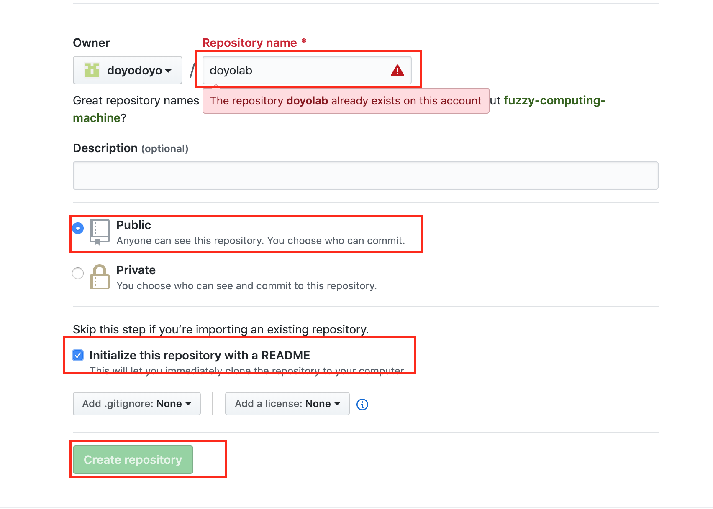

ターミナルを開いて、
"git --version"
で自分のMACにgitが入っているか確認する
インストールできていなかった場合、gitをインストールする。インストール方法は下記参照
MACのターミナルで下記のコマンドを入力しEnterを押し、gitをインストールする。
brew install git
ホームディレクトリにmygitというフォルダを作る。
ターミナルを立ち上げて下記のコマンドを入力するとフォルダが作成されます。
(make directoryの略です)
mkdir mygit
初期設定として以下三つの項目を行う
git int
git config --global user.email "メールアドレス”
git config --global user.name "SoutaGoto"
以上三つの項目を実行する
githubの右上にある+マークをクリックし、New Repositoryをクリックし、新しいリポジトリーを作る
。

下記の画像を参考にsinagara
doyolabというリポジトリーを作成する。

リポジトリーのSettingsから下記の設定をします。

githubのdoyolabというリポジトリーの中で下記の緑,のボタンを押し、リポジトリーのURLをコピーします。

ターミナルを開いて、下記のコマンドでmygitフォルダに移動します。ch2>dはchange directoryの略です
cd mygit
ターミナルで下記のコマンドを入力し、クローンを作成してください。(URLは上でコピーしたURLです。)
git clone リポジトリのURL
mygitの中にdoyolabというフォルダができて、doyolabフォルダの中にREADME.mdファイルが入っていれば成功です。
htmlファイルを作って、doyolabフォルダに入れ、下記の手順でgithubへアップロード
cd mygit/doyolab
(doyolabフォルダに移動するだけなので、既に移動済みの場合はいらない)
確認の方法はターミナルを開いた時にユーザーネームの後ろにdoyolabがついているか否か
git add .
git commit -m"メッセージ"
git push
FiNISH